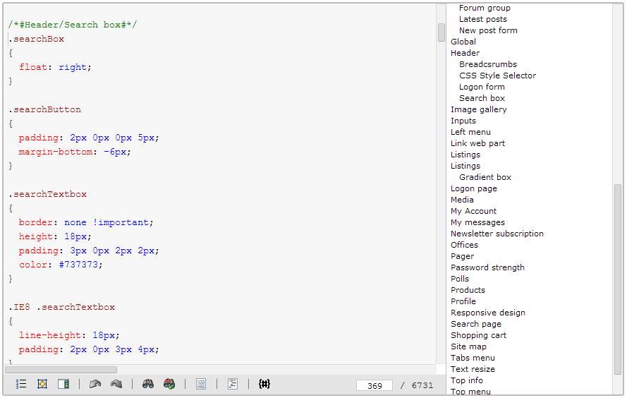

Configuring the code editor
The interface of Kentico contains areas where users can enter code that defines the appearance or behavior of websites. The code fields use an editor that provides syntax highlighting and other features to help website developers write and maintain sections of code.
Highlighting ensures that text elements are displayed in different colors depending on the syntax of the given language. Syntax highlighting improves the readability of code and makes it easier to spot and avoid mistakes. All languages commonly used for web development are supported, including HTML, ASPX markup, CSS, JavaScript, SQL, XML and C#. Each language has its own set of highlighting rules for code formatting.

Editing the code of a CSS stylesheet
In addition to syntax highlighting, the editor also provides other types of functionality:
Show/hide line numbers - enables or disables the panel that displays line numbers.
Toggle fit-to-window mode - toggles the editor between its normal size and an expanded editor covering the entire window (frame).
Show hide/bookmarks - enables or disables the bookmark panel on the side of the editor. Only available for CSS code by default.
Undo (CTRL+Z) - removes the last change made to the code in the editor, restoring it to its previous state. The editor stores the history of changes, so you can use the Undo action multiple times.
Redo (CTRL+Y) - reverses one previously made Undo action.
Search - opens a dialog that allows users to search the code in the editor for a word or phrase.
Replace - opens a dialog that allows users to find a word or phrase and replace it with the entered text.
Edit source - opens a resizable dialog where the code can be edited without syntax highlighting or any other advanced functionality.
Indent all - sets the indentation of all code in the editor according to the conventions of the given language.
Insert macro - allows you to add Kentico macro expressions in to the code.
The panel on the right is an alphabetical list of bookmarks that allows users to jump to marked sections in the code. By default, the bookmarks panel is only displayed when editing CSS stylesheets. You can insert bookmarks using code blocks (regions) following the syntax of the currently edited language, for example /* #<bookmark name># */ for CSS.
Customizing the syntax highlighting
You can modify how the code editor applies colors and other styles to various syntax tokens of individual languages:
Open the ~/CMSAdminControls/CodeMirror/theme folder in your web project
Edit the cms.css stylesheet.
Disabling the advanced code editor globally
You can adjust the behavior of all code editors in the administration interface by adding the following keys into the /configuration/appSettings section of your project's web.config file:
|
Web.config key |
Description |
Sample value |
|
CMSEnableSyntaxHighlighting |
Globally enables or disables the code editor and syntax highlighting support for all code fields in the user interface. You can disable the editor if it is causing performance issues or other problems. The default value is true. |
<add key="CMSEnableSyntaxHighlighting" value="false" /> |
|
CMSEnableSyntaxHighlighting.<Language> |
Allows you to disable the code editor and syntax highlighting support for fields that display code in a specific language. Replace <Language> in the key name with the name of the language that you wish to disable. The following language options are available:
All languages are enabled by default. |
<add key="CMSEnableSyntaxHighlighting.CSS" value="false" /> |